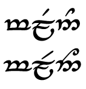

With the syllable si, it may be easier to use silmë nuquerna ("inverted S") for the s, to more clearly separate the vowel sign (tehta) from the curl of the consonant:
iG
There's no difference in meaning between the two symbols; it's purely an aesthetic choice. (Note that the tail of the inverted version descends below the line of writing.)
The first syllable in your sentence is, however, not si, but sí. The accent over the i in the transliteration indicates that the vowel is long, which changes the rendering in Tengwar.
Long vowels are normally indicated by using the "long carrier", which follows the consonant tengwa and "carries" the vowel (because you put the vowel over it instead of the consonant). That means there's no need to invert the silmë just to keep it from running into the vowel, since the vowel is over the long carrier instead, so you're back to pure aesthetics there.
The second version below the transliteration has the right idea, but appears to be using the short carrier instead of the long carrier; like the inverted silmë, the long carrier has a tail that descends below the line of writing. So, depending on the version of silmë, sí looks like either this:
8~G
or this:
i~G
For some long vowels you have the option of doubling the tehta instead of using the long carrier, but that doesn't work for i since the double-dot is a separate vowel altogether (though one not used in Quenya).
The Tengwar above appears to be in English or Sindarin mode, because the a is over the n instead of over the m. In Quenya mode, it should look like this instead:
When a word starts with (or consists entirely of) a short vowel like i, you put the vowel sign over the "short carrier" `. So the i should look not unlike its Latin transliteration:
Syllables with an initial y are an unusual case. There is no plain tengwa glyph representing consonantal y, so we use h, which originally represented the "zh" sound (as in the middle of English "measure") before Quenya lost that sound, plus the palatalization tehta ◌Í, which normally represents the insertion of a "y"-sound between another consonant and the main vowel of the syllable. Put together with the vowel ◌J for u and j for the trailing l, you get hÍJj for the syllable yul-, and this for the whole word yulma:
This looks like English/Sindarin mode again. Should be this:
Well, those are wildly-different renderings. Let's break it down by syllables.
Here we have another word starting with a short vowel, so we again use the short carrier. By itself, an initial e looks like `F, making the whole initial syllable en- look like this:
It's worth mentioning here that the sound spelled (and pronounced) qu is a single phoneme in Quenya; it used to be spelled just q without the u, but Tolkien wanted it to look more Latinish. In Tengwar, though, it's still a single tengwa z - there is no vowel tehta corresponding to the u. So -quan- looks like this:
The last two syllables are relatively straightforward - just the initial consonant with the vowel above it. -tu- is qJ, while -va is y#.
Putting it all together, the word enquantuva should look like this:
With the addition of the Tengwar equvialent of a question mark, we now have enough to transliterate the entire question:
Or, with the silmë nuquerna:
Also, while Tengwar normally uses word-spacing much as we do, inscriptions sometimes use center dots instead, like the Cirth (runes), or even run words together with no breaks at all (as in the One Ring inscription).
Here I at first thought we'd switched from Quenya to Sindarin, which is the Elvish equivalent of switching from Latin to Italian.
But the Sindarin word for "friend" is just mellon. It looks like this in Tengwar:
That's an image because the webfont doesn't do a good job of combining the l tengwa with the long tilde overlay that turns it into ll.
In case you were wondering, the Quenya word for "friend" is melda, tFj2#.
I found online translations indicating that mellonea is "friends" and mellonamin is "my friend". At first I took those to be Sindarin as well. However, they instead take the Sindarin base word and incorporate additions from a fan-created Elven language that is only loosely-based on Tolkien's. In and of itself, that's fine - unlike some of the reactions described at this article on so-called "Grelvish", I'm not dismissing the work of the role-players who created it. But personally, I just don't know how to transliterate it into Tengwar. The Grey Company's own website includes a link to download a Tengwar font, but I can't find any place where someone has created a Tengwar mode for their version of Elven. Or even really described how to pronounce its words. Without knowing how, for example, the apostrophe in malia ten' vasa is meant to be pronounced, I can't really figure out how to map the sounds to the Tengwar script.
So if you're going to use the Grey Company's phrasebook, your guess at how to write the results in Elf-script is probably as good as mine - and as the Grey Company Elves are quite sensibly more interested in having fun than being sticklers for detail, they won't complain in any event. :)
But you're trying to do this for someone who is interested in authenticity, and you just happened across the Grey Company's phrasebook while looking for resources on "Elvish", that's another matter. Unfortunately, there's not a whole lot of genuine Elvish out there to find. One of the reasons the Grey Company created Elven - apart from the whole "wanting to have fun instead of spending our time trying to learn a whole other actual language" thing - was because there aren't enough actual Quenya or Sindarin words to have much of a conversation. They had to extend the languages just to create the small bits of dialogue found in the Lord of the Rings movies... unlike the Grey Company, they hired professional linguists who attempted to go along Tolkien's original lines, but it's still an after-the-fact extension. As far as genuine Tolkienian Elvish goes, it's possible we have no idea how to ask someone if they would care for food or drink.
So with that background, let me know how you want to proceed. We can keep going with Grelvish and best guesses at the Tengwar; just want to make sure you understand what's going on.